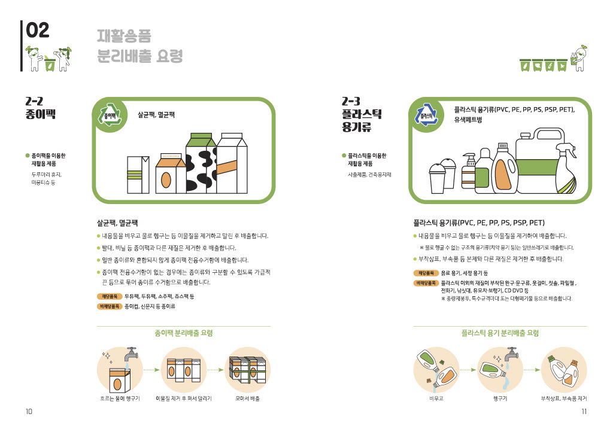
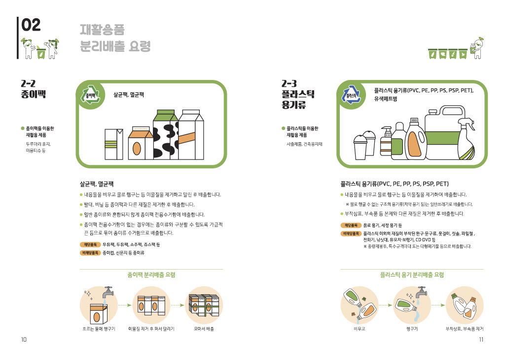

환경을 생각하는 Recyclude
Recyclude는 지역 재활용 정보와 함께 올바른 재활용 방법을 제공합니다. 재활용하며 생기는 문제를 사람들과 소통하고 QnA를 진행할 수 있습니다. 재활용이 어려울 때는 언제든지 와서 찾아보세요. 먼저 로그인하세요!
 



[서울사랑] ‘재활용’이 서툰 당신을 위한 안내서
우리 주변에는 무심코 버리면 쓰레기지만, 잘만 버리면 자원이 되는 것이 수두룩하다. 재활용품 분리수거를 하는 이유도 자원을 재활용해서 낭비를 줄이고 지구를 건강하게 만들자는 취지다. 무심코 버린 일회용 컵이나 일회용 비닐봉지 등은 지구를 병들게 하는 원인이므로 재활용 분리수거에 꼭 동참하도록 하자. 재활용 역시 계속 변화하는 중이다. 버리는 물건을 분리수거해 재활용하는 리사이클링, 폐현수막과 폐우산 등에 새로운 디자인을 입혀 전혀 다른 제품으로 재탄생시키는 업사이클링을 넘어 아예 쓰레기를 만들지 말자는 프리사이클링도 등장했다. 다양한 재활용과 새활용에 대해 알아본다.

잘 버리면 돈이 된다! 강동구 '재활용품 유가보상제'
코로나19로 음식과 각종 생활용품 배달 주문이 늘면서 배달용기와 포장재 폐기물 문제가 갈수록 커지고 있다. 환경부에 따르면 지난해 상반기 기준 국내 하루 플라스틱 배출량은 전년 같은 기간보다 약 15%나 증가했다고 한다. 이에 강동구는 지난 3월 성내종합사회복지관, ㈜옴니시스템, ㈜동양환경, ㈜에코투게더, 환경오너시민모임과 손잡고 자원순환 보상사업 ‘강동 더(THE)드림’ 업무협약을 체결, 4월 2월부터 성내종합사회복지관에서 본격적으로 사업을 시작했다. 시범사업을 거쳐 강동구 전역으로 확대할 계획이다. 강동 더(THE) 드림은 ‘보태어’라는 의미의 ‘더’와 ‘드리다’의 ‘드림’이 합쳐진 의미다. 주민참여형 재활용품 유가보상제를 도입해 재활용품 수거율을 높이는 것은 물론 올바른 재활용품 배출로 쓰레기 발생량을 줄이고자 추진하는 것으로, 성내종합사회복지관 재활용품 수집 어르신과 함께하는 ‘세미콜론 캠페인’을 위한 사업이기도 하다.

페트병이 친환경 섬유로! 재활용의 가치를 높이다
플라스틱은 재활용 분리수거 중 가장 배출량이 많은 물품이다. 가볍고 편리한 탓에 사용량이 날로 증가하고 있다. 하지만 그로 인한 환경오염 문제가 심각해져 미래를 위해서라도 플라스틱 사용을 줄이고 친환경 용품으로 대체해야 한다는 목소리가 높아가고 있다. 서울시는 금천‧영등포‧강남구 및 효성티앤씨와 함께 ‘투명 페트병 고부가가치 재활용 확대’ 업무협약(MOU)을 채결해 친환경 제품에 대한 시민 인식을 높이기 위해 발 벗고 나섰다.